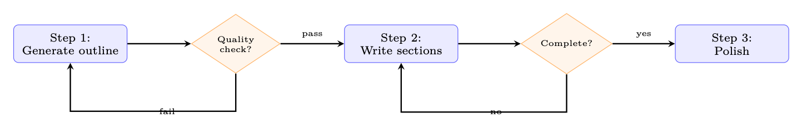
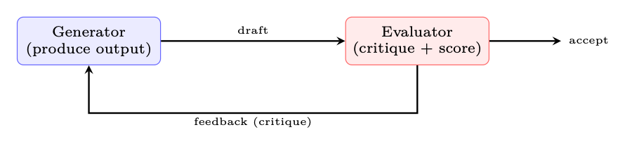

工作流模式
本节聚焦“工作流模式”的定义、机制与工程含义。
能够感知状态、规划行动、调用工具并迭代完成任务的系统单元。
把候选输出映射为偏好或质量分数的模型。
构建有效的智能体需要的不仅仅是一个强大的模型和一套工具。架构——如何 LLM 是如何编排的，任务是如何分解的，以及控制如何在组件之间流动—— 确定智能体是否可靠、可调试且具有成本效益。本章介绍了 Anthropic、OpenAI 的生产部署中出现的规范设计模式， 谷歌和开源社区。
何时使用智能体与工作流
并非所有任务都需要自主智能体。主要区别：
• 工作流程：预定义的控制流程，LLM 在特定步骤调用。可预测、可测试、 更便宜。当任务结构已知时使用。
• 智能体：LLM 动态地决定下一步做什么。灵活，处理新情况。使用 当任务需要适应性决策时。
从工作流程开始。仅当任务真正需要动态时才升级为智能体 路线或开放式探索。
工作流程模式
这些模式改编自 Anthropic 的智能体构建模块分类法 [342]，使用LLM 在预定义的控制流内。系统（而不是模型）决定执行顺序。
提示链接
最简单的模式：将复杂的任务分解为固定的 LLM 调用序列，通过流水线传输结果 将一个调用作为下一个调用的上下文。步骤之间的验证门可以尽早发现错误 向下游传播。
图 19.1：与质量门的提示链接。每个步骤都是一个单独的 LLM 调用。盖茨可以是基于LLM的 或程序化。
何时使用：自然连续的任务——内容生成、数据转换、 多阶段分析。 主要优点：每个步骤可以使用不同的提示、模型或温度。中级 结果是可检查和可调试的。

路由
分类器（LLM 或传统）检查输入并将其分派给专门的处理程序。
图 19.2：路由模式：输入被分类一次，然后由专家处理。
何时使用：具有不同最佳提示、工具或模型的不同任务类型。客户 支持分类、多模式输入处理。
并行化
多个 LLM 调用同时运行，并由编程层组合它们的输出。两个 子模式出现：
• 分段（扇出）：将输入划分为不相交的块并独立处理每个块 - 例如，同时对代码库运行安全性、性能和风格检查。
• 投票（冗余）：使用不同的种子或温度发出相同的提示 N 次， 然后通过多数投票[343]、奖励模型评分或LLM作为评委来选择最佳结果。
并行化示例：代码审查
1.并行调用：安全审查∥性能审查∥风格审查
2. 聚合：合并所有发现、删除重复、按严重程度排名
延迟 = max（单个呼叫）而不是 P（单个呼叫）。
协调者-工作者
在这里，LLM 自己决定如何分配工作。协调器模型分析任务，产生 子任务计划，将每个子任务分派给工作人员 LLM（可能有不同的提示或 工具），最后将它们的输出合并成一个连贯的结果。与并行化的主要区别 分解logits是模型生成的，而不是硬编码的。 何时使用：子任务的数量和性质无法确定的开放式问题 在设计时枚举 - 例如，“重构此代码库”需要首先了解依赖关系 在决定修改哪些文件之前先绘制图表。
评估器-优化器
双模型反馈循环[240]：生成器产生候选输出，而单独的评估器 根据明确的标准对它们进行评分。如果分数低于阈值，评估者的批评是 附加到生成器的上下文并重复循环，直到满足质量标准或重试 预算已用完。 何时使用：具有明确质量标准的任务——必须通过测试的代码、必须通过测试的翻译 必须保留意义，写作必须符合风格指南。

自主智能体模式
本节聚焦“自主智能体模式”的定义、机制与工程含义。
能够感知状态、规划行动、调用工具并迭代完成任务的系统单元。
以自注意力为核心的序列建模架构。
在状态下选择动作或生成 token 的概率分布。
智能体与环境交互形成的状态、动作、观察和奖励序列。
模型在部署或测试时生成输出的过程。
图19.3：Orchestrator-workers：LLM决定如何分解任务并合成worker 结果。
图 19.4：评估器优化器：无需训练的迭代细化。
这些模式使LLM能够控制执行流程本身。
反应（理性+行动）
基本智能体模式[127]。LLM在思考（内部推理）、 循环执行（工具调用）和观察（处理结果），直到产生最终答案。
React 实施要点
• 便签本：记录“想法”步骤，但不向用户显示。
• 工具解析：工具从模型输出中提取结构化工具调用。
• 最大迭代次数：始终限制循环（典型：10-25 次迭代）。
• 终止：模型输出特殊操作（例如，final_answer）或不调用任何工具 检测到。
规划智能体
智能体在执行之前生成明确的计划，并且可以在执行中修改计划[126]。
规划智能体：研究报告生成
用户请求：“写一份 2 页的报告，比较时间序列的Transformer架构 预测。” 第 1 步 — 计划生成（单个LLM调用）：


表 19.1：规划策略比较
策略 重新规划 特点
先计划后执行 从来没有 简单；脆弱到意想不到的结果 自适应 失败时 仅当某个步骤失败时才重新计划；成本适中 连续 每一步 每次观察后全面重新评估；费用- 严重但稳健 分层的 子计划已完成 高层计划确定；子计划生成dy- 纳米地
plan = [{"id": 1, "task": "Search for recent
transformer -based "
"time -series
models
(2023 -2025)",
"tool": "search_web", "deps": []},
{"id": 2, "task": "Read top 5 papers , extract
key
methods",
"tool": "read_papers", "deps": [1]} ,
{"id": 3, "task": "Build
comparison
table (architecture , "
"dataset , metrics)",
"tool": "none", "deps": [2]} ,
{"id": 4, "task": "Write
introduction + methodology
section",
"tool": "none", "deps": [2]} ,
{"id": 5, "task": "Write
results + conclusion",
"tool": "none", "deps": [3, 4]},
{"id": 6, "task": "Review and polish
final
report",
"tool": "none", "deps": [5]} ,
]步骤 2 — 通过自适应重新规划执行：智能体独立执行步骤 订单。第 1 步之后，搜索仅返回 3 篇相关论文。智能体重新规划：它添加了一个 将搜索范围扩大到相邻域（例如 PatchTST、iTransformer）的子步骤。修订后的 计划从步骤 2 继续，使用扩展的语料库。 关键见解：该计划是一份动态文件——它提供了结构，但适应了观察。 该执行框架以 DAG 的形式跟踪依赖关系，并且仅执行其前辈已执行的步骤 完成。
反思与自我批评
智能体停下来评估自己的轨迹和正确的路线：
1. 输出验证：“这是正确的吗？我错过了什么吗？”
2. 轨迹审查：审查最后 k 个步骤，识别错误或效率低下的地方。
3. 策略修订：重新考虑总体方法（“我解决的问题正确吗？”）。
反思：从失败中学习
反射模式[224]维持持久的“反射记忆”。每次尝试失败后， 智能体编写自然语言反射（“我失败了，因为我没有检查边缘情况”）。开 下一次尝试时，这些反思将包含在提示中——实现跨情节学习 没有体重更新。
工具使用模式
智能体如何调用工具会显着影响其可靠性、延迟和成本。五规范 模式已经出现[332]：
单转工具的使用。 最简单的模式：模型发出一个工具调用，接收结果， 并给出最终答案。足以满足事实查找、单位转换或单个 API 查询。 该工具恰好进行了两次 LLM 调用（一项用于决定工具，一项用于综合结果）。
设计原则
本节聚焦“设计原则”的定义、机制与工程含义。
能够感知状态、规划行动、调用工具并迭代完成任务的系统单元。
模型在部署或测试时生成输出的过程。
表 19.2：工具调用模式
图案 描述 示例
单匝 每个 LLM 重新调用一次工具 响应 带搜索的简单问答
多功能工具 多个并行工具调用 一个回应 搜索+计算+格式
顺序 工具输出进入下一个 工具调用 搜索→阅读→提取
嵌套 工具 打电话 触发器 另一个 智能体 代码智能体调用测试运行程序
回退 首选工具失败；尝试改变- 本地人 API→抓取→缓存
多工具（并行）。 现代 API（OpenAI、Anthropic）允许模型请求多个 一次响应中的工具调用。该工具同时执行它们并一起返回所有结果。 这极大地减少了需要来自多个来源的独立信息的任务的延迟—— 例如，同时获取股票价格、天气和日历。关键约束：工具必须 是独立的（不需要任何工具的输出作为另一个工具的输入）。
顺序（流水线）。 每个工具的输出都会输入到下一个工具的输入中，形成数据流水线。 模型根据之前的结果决定下一个工具。研究工作流程中常见的： 搜索→获取页面→提取数据→分析。安全带必须跟踪不断增长的环境 并且可能需要总结中间结果以保持在预算之内。
嵌套（智能体即工具）。 工具调用调用一个完全独立的智能体——有自己的提示符， 工具和背景。父智能体将子智能体视为黑盒函数。这使得 专业化：研究智能体将代码执行委托给编码智能体，编码智能体可以访问 沙箱和测试运行程序。群体模式[336]通过专门的之间的切换概括了这一点 智能体。
回退（优雅降级）。 执行框架按优先顺序尝试工具：如果首选工具 失败（超时、速率限制、API 错误），它会自动回退到替代方案。模型需要 无需了解后备logits - 执行框架会透明地处理它。示例：初级搜索 API→备份搜索→缓存结果→通知模型搜索不可用。
以下原则摘自 Anthropic 构建有效智能体的指南 [342]，适用 跨越所有模式：
1. 保持简单。使用最简单、可行的架构。仅在以下情况下增加复杂性： 证明有必要。解决问题的提示链总是比 多智能体系统可能。
2. 透明胜于聪明。每一步都应该是可检查的。避免隐藏状态或 隐含推理。当智能体失败时，您需要了解原因——不透明架构 使调试变得不可能。
3.提供好的工具。文档齐全、类型良好且具有清晰错误消息的工具是强制的 乘数。描述模糊的工具会被滥用；具有精确模式的工具和 使用指南将被正确选择。
4. 为失败做好计划。每个工具调用都可能失败。构建重试logits、回退和优雅降级 在执行框架级别，因此模型不需要推理基础设施故障。
模式选择指南
本节聚焦“模式选择指南”的定义、机制与工程含义。
能够感知状态、规划行动、调用工具并迭代完成任务的系统单元。
5. 使用结构化输出。约束生成（JSON 模式、函数调用）可防止 解析失败。生成需要正则表达式解析的自由格式文本的智能体很脆弱；一 生成经过验证的 JSON 是稳健的。
6. 使用不同的输入进行测试。智能体行为比单轮聊天更加多变。一样的 提示可以在不同的运行中产生不同的工具调用序列。进行对抗性测试， 边缘情况、不明确的请求和格式错误的输入。
图案选择指南
选择正确的模式取决于三个因素：(1) 任务结构的可预测性， (2) 在延迟和成本方面您可以承受多少个 LLM 调用，以及 (3) 质量是否需要迭代。 使用下表作为决策矩阵 - 从顶部（最简单）开始，仅在以下情况下向下移动 更简单的模式显然是失败的。
表 19.3：何时使用每种智能体设计模式
图案 复杂性 LLM电话 最适合
提示链接 低 N（固定） 顺序任务、内容流水线 路由 低 1+1 多类型输入、分类 并行化 低 N（平行） 独立子任务、投票 协调者-工作者 中等 变量 未知分解 评估优化器 中等 2–10（循环） 质量关键的输出 反应 中等 3–25（循环） 一般工具使用、探索 策划智能体 高 5–50+ 长期、多步骤的任务 反思 高 +50% 管理费用 第一次尝试经常失败的任务 多智能体 高 很多 领域复杂、专业化
模式是可组合的：规划智能体可以对各个步骤使用提示链， 评估器优化器在其审查阶段，并路由将子任务分派给专家。艺术 知道何时停止添加图层。